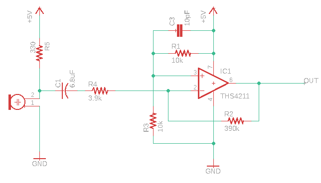

Here's a photo of our final robot design! What a beautiful boy
Introduction
This design report will serve as a condensed version of all of the tasks we have accomplished over the course of the semester. Those tasks include:
- Line following and wall sensing
- FFTs of audio and IR signals
- Audio: to get the robot to start on a 660 Hz tone
- IR: to get the robot to avoid collision with other robots emitting an IR signal
- Radio communication and GUI mapping
- Image processing using an FPGA for treasure detection
- Broken down into color and shape detection
- Using a search algorithm in order to effectively map the maze
- Control logic improvement
- 3-D printed parts
- Protoboarding
The Basics: Line Following and Wall Detection
The essential idea for line following and wall following were maintained following their implementation in Milestones 1 and 2 respectively.
Line following was performed using three line sensors arranged in parallel on the front of the robot.
The Arduino uses an analogRead on each of the line sensors, which would return a value from 0 to 1023
We used the returned values from on/off a white line to determine accurate thresholds of line detection for each of the three line sensors.
Following a line also implied creation of subfunctions for turning, so we implemented these as well.
We created delay-based turnLeft() and turnRight() functions that would be called by the line following code
Following this, we were able to create a line following control loop that allowed the robot to stay on track:
Loop: If the middle line sensor detects a white line: the robot should go straight
the robot should turn clockwise until the middle line sensor returns to the line
the robot should turn counterclockwise until the middle line sensor returns to the line
the robot acknowledges that it's at an intersection.
the robot will perform whatever functions being at an intersection requires
the robot should go straight until the middle sensor stops detecting a line
This control loop remained relatively the same throughout our robot's design process. The main changes over the course of the semester to this line following feature were the actual orientation of the line sensors (the distance they were away from each other) and the functions performed when the robot is at an intersection, as the complexity of the robot increased. Those included wall detection, information transmission, and search algorithm calculations. The turn functions eventually had more logic included within them for robot orientation, and the delays associated with them were also tweaked over time.
We implemented our wall detection using 3 wall sensors, for front, left and right walls. Each of these were intended to be processed using the Arduino's analogRead function, and then converted to a distance based off of the returned reading. However, since three of the analog input pins were being utilized by line sensors, we chose to create Schmitt triggers in order to convert our analog signals to digital ones. Full implementation details and Schmitt trigger threshold calculations are in our Milestone 2 documentation.
We were able to neatly integrate our wall detection and handling code into this line detection algorithm by creating a checkWalls() function that would run at an intersection. That function returns a 4-bit binary value (declared as an int) with the 3 LSBs corresponding to detection of a left, front, and right wall based off of the digitalRead value for each sensor. The wall detection control loop within the line following's intersection handling is shown below:
When at an intersection:
Here is a video of both of these components in action:
FFTs: Audio and IR
Our first task was to use a microphone to detect a 660 Hz signal for the robot to start on.
We first connected the microphone to the following amplifier circuit, as the raw output of the microphone was too low to directly connect to the Arduino.


We fed the output of this signal into an analog pin of the robot's Arduino, and used the FFT library to determine the presence of a 660 Hz tone by determining which bins had a peak in them when a signal of that frequency was put into it.
A major problem with this is that the FFT library is very large, and integration caused memory and stability issues. Initially, we used 256 bins as suggested by the Lab 2 guidelines.
However, we ended up switching to 128 bins instead in order to resolve the memory issues.
This integration was simple, as all we needed to do to find the new peak bins was divide the original by 2.
Our next FFT task was integration of IR detection in order to allow our robot to avoid other robots.
This detection would need to be processed at every intersection, as this is where our turn logic is located.
Each robot is equipped with an IR hat emitting a 6.6kHz signal, as well as an IR LED that is able to detect these signals.
In a near identical way to the microphone circuit, we connected the output of the IR detector to another amplifier circuit, fed this output into an analog pin, and ran an FFT on the output to determine the peak bins.
We had to recalculate the bins later upon switching to 128 samples.
The IR detection had one other issue to it: the FFT library and servos use the same timer which caused the servos to not run when the FFT was included.
The issue is that to run the FFT, you need to change the values of some registers (TIMSK0, ADCSRA, ADMUX, DIDR0).
We worked around this by saving the default values of these registers before they are altered and then resetting them after the FFT is run by wrapping the runFFT() into its own function.
We added this runFFT function to the control loop of the robot in the case where the robot is at an intersection.
Radio Communication: Encoding and Transfer of Information
In the final competition, our goal was to map the competition maze by displaying the contents of each square onto a GUI.
In order to do so, we needed to be able to send encoded information about the maze via a radio mounted on the competition robot to another radio connected to the GUI laptop (aka a base station)
From this base station, we also needed to decode the sent information packets, and use it to write the information to the GUI.
Essentially, we created two pieces of code for this portion of the project: encoding and transmission logic inside of the code currently running on the robot,
and a Base station code file for information decoding
Once we determined these goals, we had to create a scheme to transfer all of the information about a maze
To avoid sending an excessive amount of data through the radios, we defined an encoding to send all the data we needed in just two bytes.
These two bytes were stored in an unsigned long and we used bit masking to set them for a trnsmission over the radios. The encoding was as follows:
- Bits 15-12: The Y-coordinate of the robot's position, A number from 0-9.
- Bits 11-8: The X-coordinate of the robot's position, A number from 0-9.
- Bits 7-6: A 2-bit shape code identifying one of three treasure shapes. The unused combination was used to denote an invalid shape.
- Bit 5: A single bit for the color of the above treasure, either red or blue. Ignored if the shape code was set to invalid.
- Bit 4: A single bit for IR detection, if set it means another robot was detected.
- Bits 3-0: 4 Bits for walls seen by the robot in the square of its current position. One bit for each possible wall (N,S,E,W).
The base station read these 2 bytes from the radio transmission and deccoded them into a series of print statements to be spewed to the GUI. Most of the complicated
encoding was done on the robot side, so the base station code was pretty simple; just a series of conditionals apart from some acknowledgement procedures for the radio.
FPGA: Image Processing and Treasure Detection
In order for treasure detection to work in competition, we needed to correctly set up a camera from the Arduino, and interface it with an FPGA.
The FPGA would then communicate results back to the Arduino via parallel communication.
To begin with, we wrote a simple script that would enable the correct registers for our RGB protocol, QCIF format, clocking, and live images.
After setting up timers on the FPGA, we then attempted to generate an initial live image creation correctly.
Once we were able to produce a clear image, we updated the FPGA's image processor program to determine red and blue majority images in order to detect treasures.
We did this by creating a four-state FSM for pixel count and characterization as shown below:
[TODO: fsm for color]
Following this, we attempted to extend our code to be able to detect shapes.
[TODO: explain this, I never really understood it]
Below is a video demonstration of our target and color detection, with Red and Blue LEDs lighting up corresponding to detection of their respective colors:
While we attempted to mount our color-detecting image processor onto our robot, connecting it caused all pre-existing features on the robot to fail.
As it was only a day before competition that we attempted to do this, we decided to focus our energy into debugging alternative issues with our design
in order to give our robot its best chance of success. Given more time, we would have liked to figure out what exactly (either software or hardware) caused
the robot to lose nearly all of its functionality once the FPGA and camera were connected.
Arduino Software: Search Algorithms and Control Logic
Up until Milestone 3, nearly all of the code that we had implemented was either hardware setup or integration. But, the problem of effective maze traversal in competition provided us an opportunity to construct a search algorithm. We chose to implement a depth first search (DFS) algorithm in order to explore the maze utilizing the StackArray library in Arduino. The robot will add grid blocks that it has yet to visit to its frontier, and will backtrack to access them after popping each from a StackArray. Below is a pseudocode block that essentially maps out our DFS algorithm:
StackArray<byte> frontier
runDFS:
n = frontier.pop() //(goal state)
visit(n): // move our robot to n
If n is within one square of where currently are:
Move to that square
While n is farther away than one square:
Move back to the parent of current node
Determine what places we can visit //based on robot orientation and walls detected
Add these places to the frontier stack
Return current position of robot and its orientation
Setup
Wait for microphone to detect 660 Hz
Loop:
If at an intersection:
Check F-L-R walls
Check IR sensor for robot
Stop until the IR signal goes away
Run DFS and get the next orientation and position
Update orientation relative to north
Get new position
Send position and wall info to the maze GUI
Else:
Follow the lines in the path specified by DFS/backtracking
Physical Design: Protoboarding and 3-D Printing
One aspect in which our team shines is the physical design of our robot. In order to avoid the issues we faced that were caused by messy wiring, we transferred 100% of our circuits from breadboards to perfboards We condensed our Schmitt trigger circuits as well as our Audio and IR amplification circuits to a single perfboard. Additionally, we had a strip of perfboard with two columns of header pins in it (female and male) that we used exclusively for power and ground rails. We included our decoupling capacitors directly onto this power/ground rail. We ended up redoing our microphone circuit just before competition, but this was also perf boarded and fixed to the top of our robot. Another way in which we improved our design for competition was the number of 3-D printed parts we created, fabricated, and incorporated. If we ever found that the components provided to us were not sufficient, we were very quick in designing and including a custom part. These included:
Unresolved Issues and Future Improvements
In no particular order, here's a list of things we'd have liked to have done this semester:
- Get the robot to stop detecting itself
- Fully debugging GUI transmission errors
- improve backtracking algorithm from DFS
- - Like Dijkstra's to avoid spiraling
- Improve code modularity
- - Avoiding repetitive case blocks and condensing code
- Actually debugging and including the FPGA
- PCB instead of perfboarding?
- - Even cleaner wiring
- More decorations :)
Conclusions
This course taught us a lot about the skills required to build a robot, from circuit design, to Arduino coding and sensor integration, to FPGAs and finite state machines. But the whole experience about this class goes far beyond that; while our technical abilities certainly improved, this class allowed us to grow in non-technical regards as well. We learned about the joys of having things work, and got over senses of despair and frustration when they didn't. We learned how to debug and test quickly and effectively. We learned how to compromise between our ideals and reality. But most importantly, we learned about the ups and downs of teamwork, which is something that we will take with us into industry and beyond.
Robot Cost
there should be a table here but I don't know how to figure that out :(